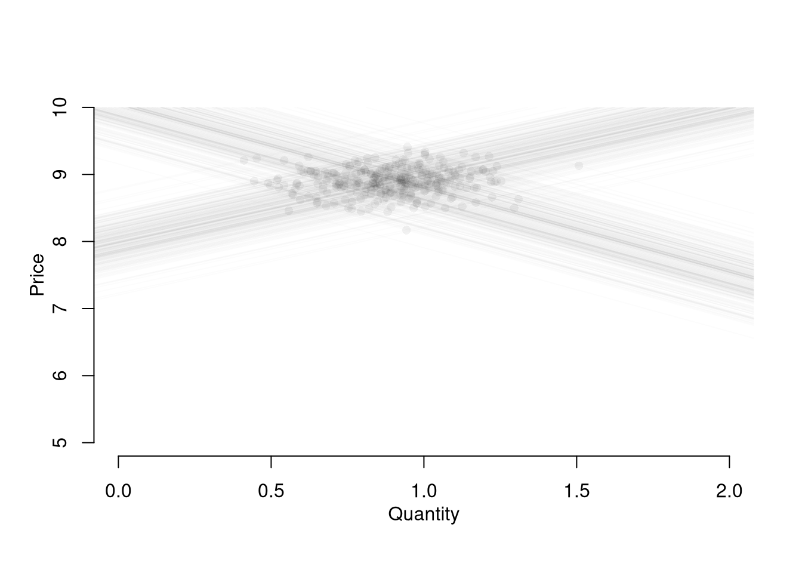

9 Data Scientism
There is currently a boom in empirical research centered around linear regression analysis. This is not for the first boom in empirical research, and we’d be wise to recall some earlier wisdom from economists on the matter.
The blind transfer of the striving for quantitative measurements to a field where the specific conditions are not present which give it its basic importance in the natural sciences is the result of an entirely unfounded prejudice. It is probably responsible for the worst aberrations and absurdities produced by scientism in the social sciences. It not only leads frequently to the selection for study of the most irrelevant aspects of the phenomena because they happen to be measurable, but also to “measurements” and assignments of numerical values which are absolutely meaningless. What a distinguished philosopher recently wrote about psychology is at least equally true of the social sciences, namely that it is only too easy “to rush off to measure something without considering what it is we are measuring, or what measurement means. In this respect some recent measurements are of the same logical type as Plato’s determination that a just ruler is 729 times as happy as an unjust one.”
— F.A. Hayek, 1943
if you torture the data long enough, it will confess
— R. Coase (Source Unknown)
the definition of a causal parameter is not always clearly stated, and formal statements of identifying conditions in terms of well-specified economic models are rarely presented. Moreover, the absence of explicit structural frameworks makes it difficult to cumulate knowledge across studies conducted within this framework. Many studies produced by this research program have a `stand alone’ feature and neither inform nor are influenced by the general body of empirical knowledge in economics.
— J.J. Heckman, 2000
without explicit prior consideration of the effect of the instrument choice on the parameter being estimated, such a procedure is effectively the opposite of standard statistical practice in which a parameter of interest is defined first, followed by an estimator that delivers that parameter. Instead, we have a procedure in which the choice of the instrument, which is guided by criteria designed for a situation in which there is no heterogeneity, is implicitly allowed to determine the parameter of interest. This goes beyond the old story of looking for an object where the light is strong enough to see; rather, we have at least some control over the light but choose to let it fall where it may and then proclaim that whatever it illuminates is what we were looking for all along.
— A. Deaton, 2010
The OLS examples are familiar are subject to current research. At the end are two simple examples of scientism with the ‘’latest and greatest’’ empirical recipes—we don’t have many theoretical results yet but I think you can understand the issue with the numerical example.
9.1 OLS in the age of big data
We begin with a motivating empirical example and then an simulation excercise.
9.1.1 US Gov’t Spending on Science
Get and inspect some data from https://tylervigen.com/spurious-correlations
## Your data is not made up in the computer (hopefully!)
## will normally be an address on your PC
vigen_csv <- read.csv( paste0(
'https://raw.githubusercontent.com/the-mad-statter/',
'whysospurious/master/data-raw/tylervigen.csv') )
class(vigen_csv)## [1] "data.frame"names(vigen_csv)## [1] "year" "science_spending"
## [3] "hanging_suicides" "pool_fall_drownings"
## [5] "cage_films" "cheese_percap"
## [7] "bed_deaths" "maine_divorce_rate"
## [9] "margarine_percap" "miss_usa_age"
## [11] "steam_murders" "arcade_revenue"
## [13] "computer_science_doctorates" "noncom_space_launches"
## [15] "sociology_doctorates" "mozzarella_percap"
## [17] "civil_engineering_doctorates" "fishing_drownings"
## [19] "kentucky_marriage_rate" "oil_imports_norway"
## [21] "chicken_percap" "train_collision_deaths"
## [23] "oil_imports_total" "pool_drownings"
## [25] "nuclear_power" "japanese_cars_sold"
## [27] "motor_vehicle_suicides" "spelling_bee_word_length"
## [29] "spider_deaths" "math_doctorates"
## [31] "uranium"vigen_csv[1:5,1:5]## year science_spending hanging_suicides pool_fall_drownings cage_films
## 1 1996 NA NA NA NA
## 2 1997 NA NA NA NA
## 3 1998 NA NA NA NA
## 4 1999 18079 5427 109 2
## 5 2000 18594 5688 102 2## similar `apply' functions
lapply(vigen_csv[,1:5], class) ## like apply, but for lists## $year
## [1] "integer"
##
## $science_spending
## [1] "integer"
##
## $hanging_suicides
## [1] "integer"
##
## $pool_fall_drownings
## [1] "integer"
##
## $cage_films
## [1] "integer"sapply(vigen_csv[,1:5], class) ## lapply, formatted to a vector## year science_spending hanging_suicides pool_fall_drownings
## "integer" "integer" "integer" "integer"
## cage_films
## "integer"The US government spending on science is ruining cinema (p<.001)!?
## Drop Data before 1999
vigen_csv <- vigen_csv[vigen_csv$year >= 1999,]
## Run OLS Regression $
reg1 <- lm(cage_films ~ -1 + science_spending,
data=vigen_csv)
summary(reg1)##
## Call:
## lm(formula = cage_films ~ -1 + science_spending, data = vigen_csv)
##
## Residuals:
## Min 1Q Median 3Q Max
## -1.7670 -0.7165 0.1447 0.7890 1.4531
##
## Coefficients:
## Estimate Std. Error t value Pr(>|t|)
## science_spending 9.978e-05 1.350e-05 7.39 2.34e-05 ***
## ---
## Signif. codes: 0 '***' 0.001 '**' 0.01 '*' 0.05 '.' 0.1 ' ' 1
##
## Residual standard error: 1.033 on 10 degrees of freedom
## (1 observation deleted due to missingness)
## Multiple R-squared: 0.8452, Adjusted R-squared: 0.8297
## F-statistic: 54.61 on 1 and 10 DF, p-value: 2.343e-05It’s not all bad, people in maine stay married longer?
plot.new()
plot.window(xlim=c(1999, 2009), ylim=c(7,9))
lines(log(maine_divorce_rate*1000)~year, data=vigen_csv)
lines(log(science_spending/10)~year, data=vigen_csv, lty=2)
axis(1)
axis(2)
legend('topright', lty=c(1,2), legend=c(
'log(maine_divorce_rate*1000)',
'log(science_spending/10)'))
par(mfrow=c(1,2), mar=c(2,2,2,1))
plot.new()
plot.window(xlim=c(1999, 2009), ylim=c(5,9)*1000)
lines(science_spending/3~year, data=vigen_csv, lty=1, col=2, pch=16)
text(2003, 8200, 'US spending on science, space, technology (USD/3)', col=2, cex=.6, srt=30)
lines(hanging_suicides~year, data=vigen_csv, lty=1, col=4, pch=16)
text(2004, 6500, 'US Suicides by hanging, strangulation, suffocation (Deaths)', col=4, cex=.6, srt=30)
axis(1)
axis(2)
plot.new()
plot.window(xlim=c(2002, 2009), ylim=c(0,5))
lines(cage_films~year, data=vigen_csv[vigen_csv$year>=2002,], lty=1, col=2, pch=16)
text(2006, 0.5, 'Number of films with Nicolas Cage (Films)', col=2, cex=.6, srt=0)
lines(pool_fall_drownings/25~year, data=vigen_csv[vigen_csv$year>=2002,], lty=1, col=4, pch=16)
text(2006, 4.5, 'Number of drownings by falling into pool (US Deaths/25)', col=4, cex=.6, srt=0)
axis(1)
axis(2)
## Include an intercept to regression 1
#reg2 <- lm(cage_films ~ science_spending, data=vigen_csv)
#suppressMessages(library(stargazer))
#stargazer(reg1, reg2, type='html')9.1.2 False Positives arise from errors
A huge amount of data normally means a huge amount of data cleaning/merging/aggregating. Some spurious results are driven by errors in this process, so be careful.
## Function to Create Sample Datasets
make_noisy_data <- function(n, b=0){
x <- seq(1,10, length.out=n)
e <- rnorm(length(x), mean=0, sd=10)
y <- b*x + e
xy_mat <- data.frame(ID=seq(x), x=x, y=y)
return(xy_mat)
}
## Two sample datasets
dat1 <- make_noisy_data(6)
dat2 <- make_noisy_data(6)
## Merging data in wide format
dat_merged_wide <- merge(dat1, dat2,
by='ID', suffixes=c('.1','.2'))
## merging data in long format and reshaping to wide
dat_merged_long <- rbind( cbind(dat1,DF=1),cbind(dat2,DF=2))
library(reshape2)
dat_melted <- melt(dat_merged_long, id.vars=c('ID', 'DF'))
dat_merged_wide2 <- dcast(dat_melted, ID~DF+variable)
## CHECK they are the same.
dat_merged_wide == dat_merged_wide2## ID x.1 y.1 x.2 y.2
## [1,] TRUE TRUE TRUE TRUE TRUE
## [2,] TRUE TRUE TRUE TRUE TRUE
## [3,] TRUE TRUE TRUE TRUE TRUE
## [4,] TRUE TRUE TRUE TRUE TRUE
## [5,] TRUE TRUE TRUE TRUE TRUE
## [6,] TRUE TRUE TRUE TRUE TRUENevertheless, data transformation is often necessary before regression analysis. For downloading tips, see https://raw.githubusercontent.com/rstudio/cheatsheets/main/data-import.pdf
9.1.3 False Positives arise from Regression Machines
Another class of errors pertains to P-hacking (and it’s various synonyms)
n <- 50
p <- 1
i <- 0
X1 <- runif(n)
## P-hacking
while(p >= .001){ ## stops when p < .001
## Get Random Covariate
set.seed(i)
X2 <- runif(n)
## Merge and `Analyze'
dat_i <- data.frame(X1,X2)
reg_i <- lm(X1~X2, data=dat_i)
## update results in global environment
p <- summary(reg_i)$coefficients[2,4]
i <- i+1
}
plot(X1~X2, data=dat_i,
pch=16, col=grey(.5,.5),
main=paste0('Random Dataset ', i))
abline(reg_i)
For more intuition on spurious correlations, try http://shiny.calpoly.sh/Corr_Reg_Game/
9.2 Causal effects sans theory
We simply apply ``credible methods’’ to a couple of random walks; finding a treatment that fits mold and adding various robustness checks that make the treatment appear robust. The analysis sounds scientific, and you could probably be convinced if it were not just random noise.
9.2.1 RDD
n <- 1000
n_index <- seq(n)
set.seed(1)
random_walk1 <- cumsum(runif(n,-1,1))
set.seed(2)
random_walk2 <- cumsum(runif(n,-1,1))
par(mfrow=c(1,2))
plot(random_walk1, pch=16, col=grey(.5,.5))
plot(random_walk2, pch=16, col=grey(.5,.5))
## Let the data take shape
## (around the large differences before and after)
n1 <- 290
wind1 <- c(n1-300,n1+300)
dat1 <- data.frame(t=n_index, y=random_walk1, d=1*(n_index > n1))
dat1_sub <- dat1[ n_index>wind1[1] & n_index < wind1[2],]
## Then find your big break
reg0 <- lm(y~t, data=dat1_sub[dat1_sub$d==0,])
reg1 <- lm(y~t, data=dat1_sub[dat1_sub$d==1,])
## The evidence should show openly (it's just science)
plot(random_walk1, pch=16, col=grey(.5,.5), xlim=wind1)
abline(v=n1, lty=2)
lines(reg0$model$t, reg0$fitted.values, col=2)
lines(reg1$model$t, reg1$fitted.values, col=4)
## Dress with some statistics for added credibility
rdd_sub <- lm(y~d+t+d*t, data=dat1_sub)
rdd_full <- lm(y~d+t+d*t, data=dat1)
stargazer::stargazer(rdd_sub, rdd_full,
type='html',
title='Recipe RDD',
header=F,
omit=c('Constant'),
notes=c('First column uses a dataset around the discontinuity.',
'Smaller windows are more causal, and where the effect is bigger.'))| Dependent variable: | ||
| y | ||
| (1) | (2) | |
| d | -13.169*** | -9.639*** |
| (0.569) | (0.527) | |
| t | 0.011*** | 0.011*** |
| (0.001) | (0.002) | |
| d:t | 0.009*** | 0.004* |
| (0.002) | (0.002) | |
| Observations | 589 | 1,000 |
| R2 | 0.771 | 0.447 |
| Adjusted R2 | 0.770 | 0.446 |
| Residual Std. Error | 1.764 (df = 585) | 3.081 (df = 996) |
| F Statistic | 658.281*** (df = 3; 585) | 268.763*** (df = 3; 996) |
| Note: | p<0.1; p<0.05; p<0.01 | |
| First column uses a dataset around the discontinuity. | ||
| Smaller windows are more causal, and where the effect is bigger. | ||
9.2.2 DID
## Find a reversal of fortune
## (A good story always goes well with a nice pre-trend)
n2 <- 318
wind2 <- c(n2-20,n2+20)
plot(random_walk2, pch=16, col=4, xlim=wind2, ylim=c(-15,15))
points(random_walk1, pch=16, col=2)
abline(v=n2, lty=2)
## Knead out any effects that are non-causal
## (or even just correlation)
dat2A <- data.frame(t=n_index, y=random_walk1, d=1*(n_index > n2), RWid=1)
dat2B <- data.frame(t=n_index, y=random_walk2, d=0, RWid=2)
dat2 <- rbind(dat2A, dat2B)
dat2$RWid <- as.factor(dat2$RWid)
dat2$tid <- as.factor(dat2$t)
dat2_sub <- dat2[ dat2$t>wind2[1] & dat2$t < wind2[2],]
## Report the stars for all to enjoy
## (and remind that stable coefficients are the good ones)
did_fe1 <- lm(y~d+tid, data=dat2_sub)
did_fe2 <- lm(y~d+RWid, data=dat2_sub)
did_fe3 <- lm(y~d*RWid+tid, data=dat2_sub)
stargazer::stargazer(did_fe1, did_fe2, did_fe3,
type='html',
title='Recipe DID',
header=F,
omit=c('tid','RWid', 'Constant'),
notes=c(
'Fixed effects for time in column 1, for id in column 2, and both in column 3.',
'Fixed effects control for most of your concerns.',
'Anything else creates a bias in the opposite direction.'))| Dependent variable: | |||
| y | |||
| (1) | (2) | (3) | |
| d | 1.804* | 1.847*** | 5.851*** |
| (0.892) | (0.652) | (0.828) | |
| Observations | 78 | 78 | 78 |
| R2 | 0.227 | 0.164 | 0.668 |
| Adjusted R2 | -0.566 | 0.142 | 0.309 |
| Residual Std. Error | 2.750 (df = 38) | 2.035 (df = 75) | 1.827 (df = 37) |
| F Statistic | 0.287 (df = 39; 38) | 7.379*** (df = 2; 75) | 1.860** (df = 40; 37) |
| Note: | p<0.1; p<0.05; p<0.01 | ||
| Fixed effects for time in column 1, for id in column 2, and both in column 3. | |||
| Fixed effects control for most of your concerns. | |||
| Anything else creates a bias in the opposite direction. | |||
- Replicable: someone collecting new data comes to the same results.
- Reproducibile: someone reusing your data comes to the same results.
Will we cover some of both below. Note that you can read more about the distinction in many places, including